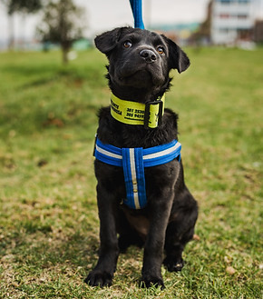
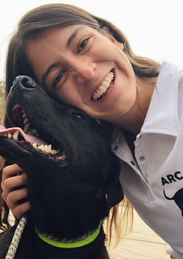
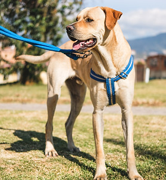
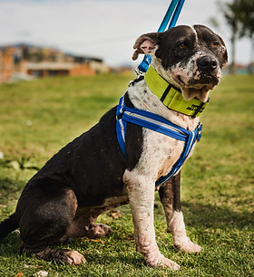

0 – 1 añoCachorros
¡Sin duda los más tiernos y también los más traviesos! Vas a disfrutar sus etapas de crecimiento, pero requieren tiempo, paciencia y dedicación: comen varias veces al día y hay que educarlos desde cero.
Adopción responsable · Bogotá, Colombia
Adoptar salva vidas: es un gran acto de amor. En Arca Luminosa tenemos una tripulación de peludos rescatados muy especial — todos distintos, pero todos sobrevivientes de un pasado triste y vulnerable que ahora buscan una segunda oportunidad para toda su vida.
Cuando adoptás con Arca, estás salvando dos vidas: la del peludito que acogés en tu hogar y la del nuevo rescate que podremos hacer gracias al cupo que deja tu adopción.

Cómo funciona
Queremos que cada adopción sea responsable y para toda la vida. Por eso acompañamos cada caso con un proceso claro de siete pasos, desde el formulario inicial hasta el seguimiento después de la entrega.
¿Ya tenés claro que querés adoptar?
El primer paso siempre es el formulario. Nuestro equipo de adopciones revisa cada solicitud con cuidado.
Completá el formulario de adopción.
Tu formulario será revisado y aprobado por nuestro equipo de adopciones.
Te contactaremos para programar una visita domiciliaria, virtual o presencial.
Si se aprueba la adopción, firmamos un contrato y coordinamos la entrega de la mascota.
La primera semana es de prueba y adaptación, para convivir y tomar la decisión definitiva.
Seguimos en contacto un tiempo para verificar cómo marcha todo con el peludito.
Te pediremos fotos y videos para el seguimiento.
Antes de decidir
Cachorros, adultos o ancianitos: cada etapa tiene su propio ritmo. Conocerlas te ayuda a elegir con quién vas a compartir los próximos años.

0 – 1 año¡Sin duda los más tiernos y también los más traviesos! Vas a disfrutar sus etapas de crecimiento, pero requieren tiempo, paciencia y dedicación: comen varias veces al día y hay que educarlos desde cero.

1 – 7 añosNuestra experiencia nos ha demostrado que un perro adulto es mucho más fácil de educar: ya pasó su etapa de cachorro y se amolda con facilidad. Sabemos su tamaño definitivo y su carácter.

8+ añosYa están educados y saben convivir en armonía con la familia. Son más calmados y sedentarios — y muchísimo más agradecidos, porque conocen el abandono.
Nuestro catálogo se actualiza en Instagram
El cupo de rescatados de Arca Luminosa cambia todo el tiempo: hay ingresos, adopciones y altas médicas cada semana. Por eso mantenemos el catálogo actualizado directamente en nuestro Instagram, con fotos, videos e historias de cada uno.
Ver quién busca hogar ahora


#adoptanocompres